IDRL 科研汇报模板
16 页 · 分层版式 · 可编辑文字、表格与图表 · 全部数值为合成示例
下载 PPTX · PDF 预览 · 科研图表规范
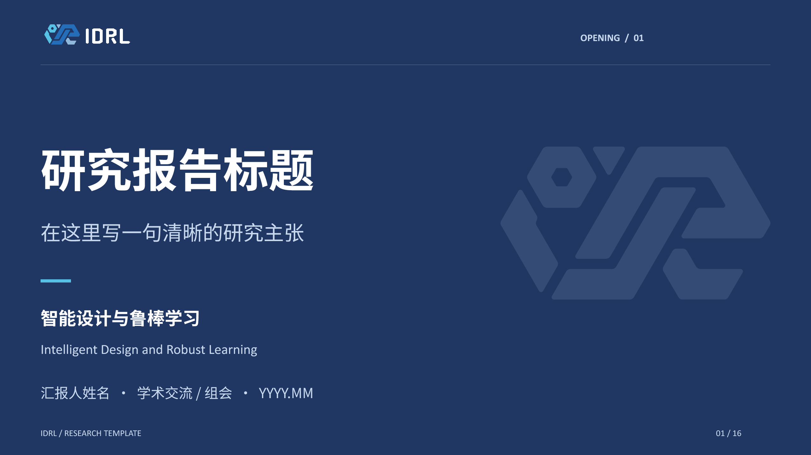
01 / 16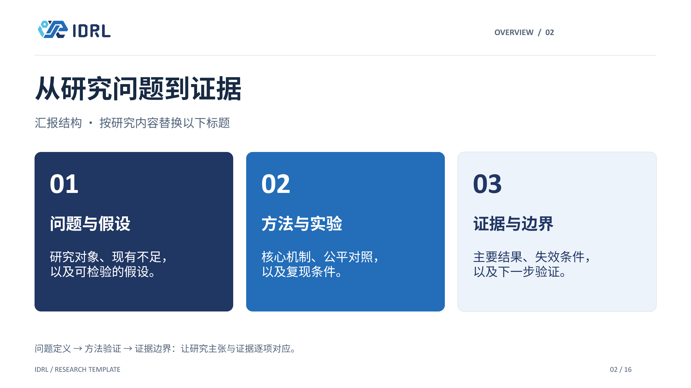
02 / 16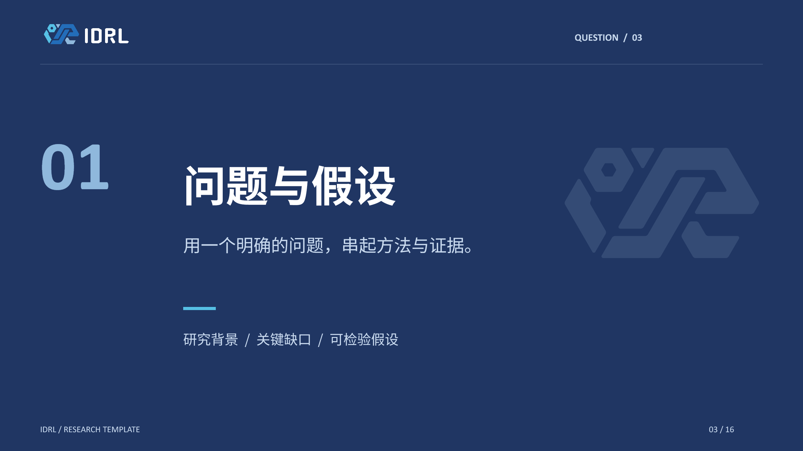
03 / 16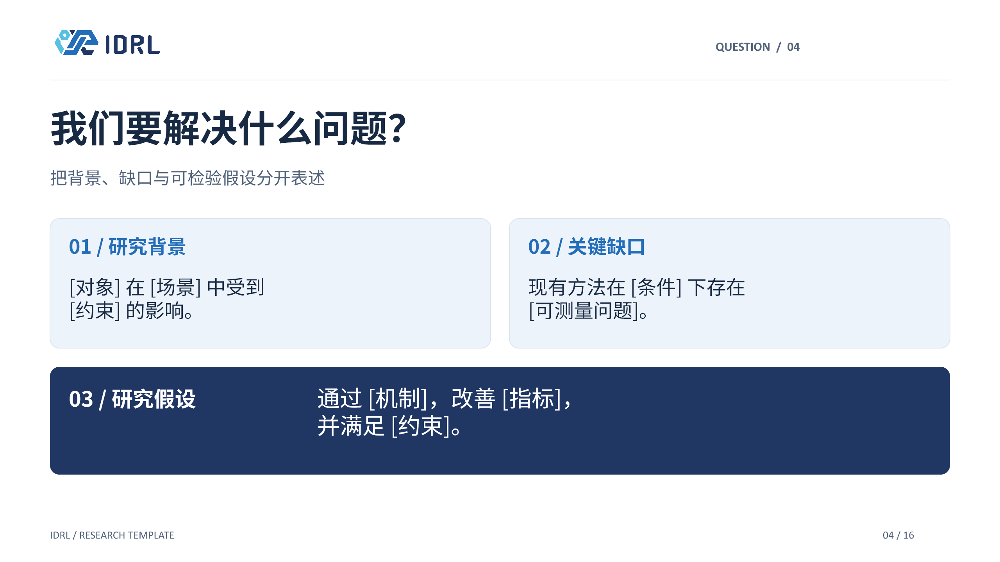
04 / 16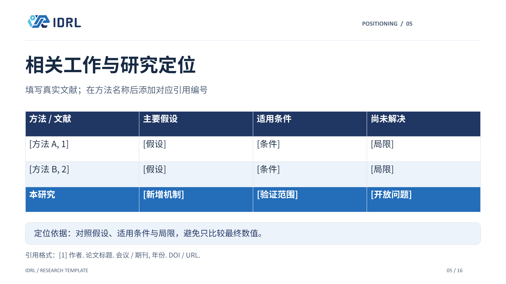
05 / 16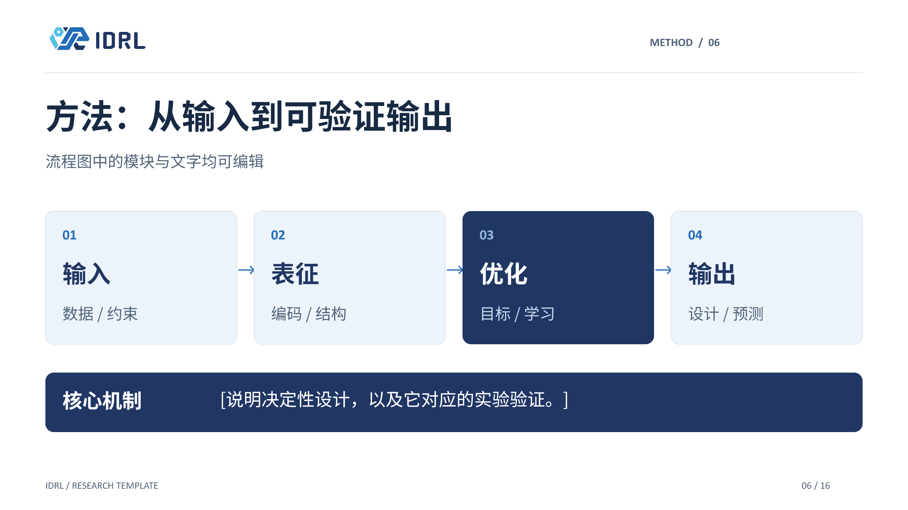
06 / 16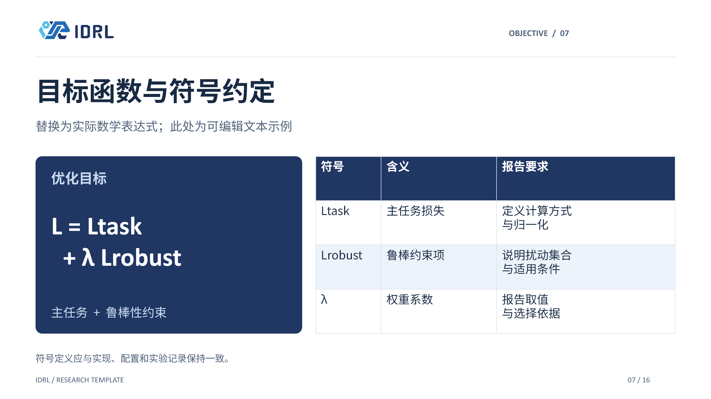
07 / 16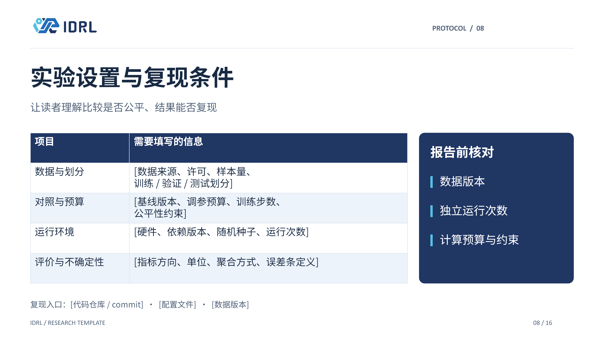
08 / 16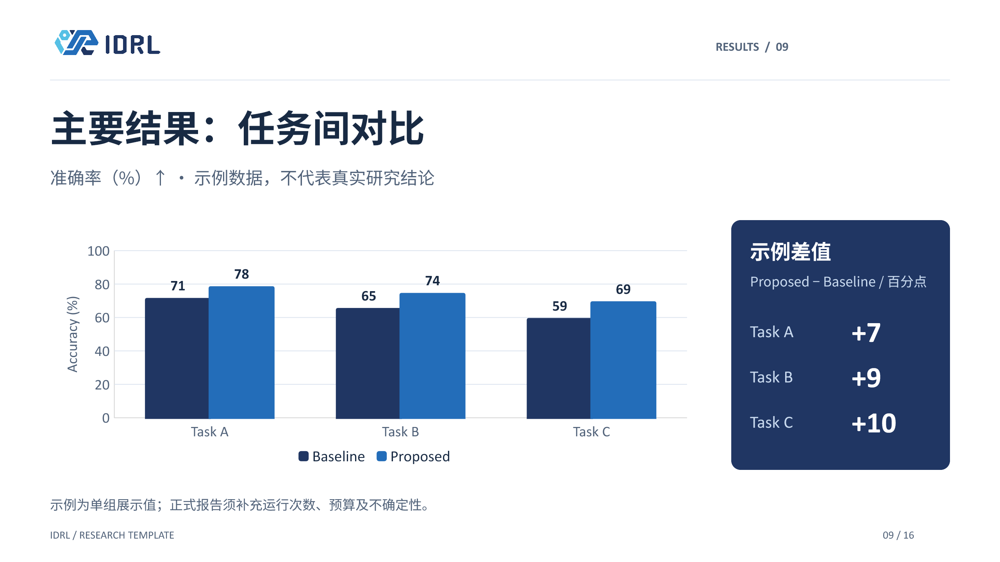
09 / 16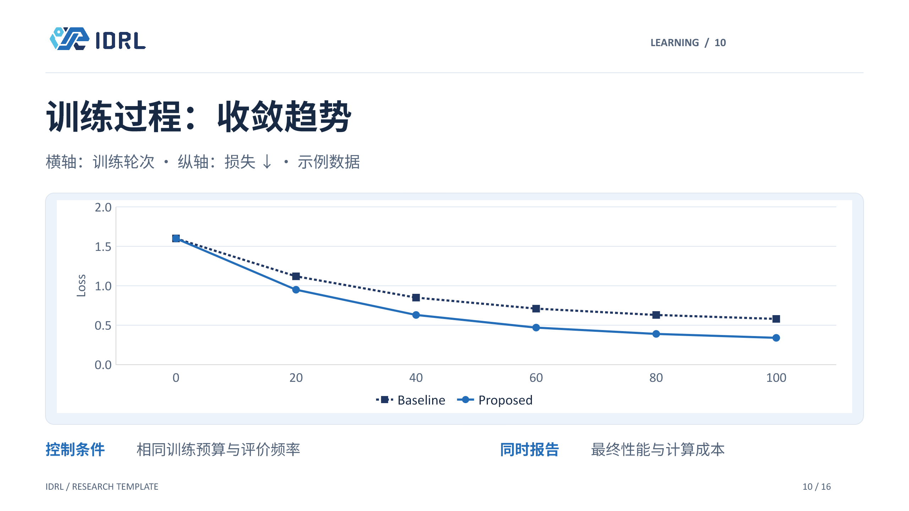
10 / 16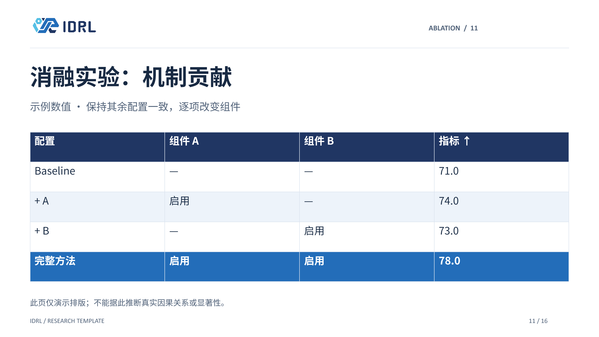
11 / 16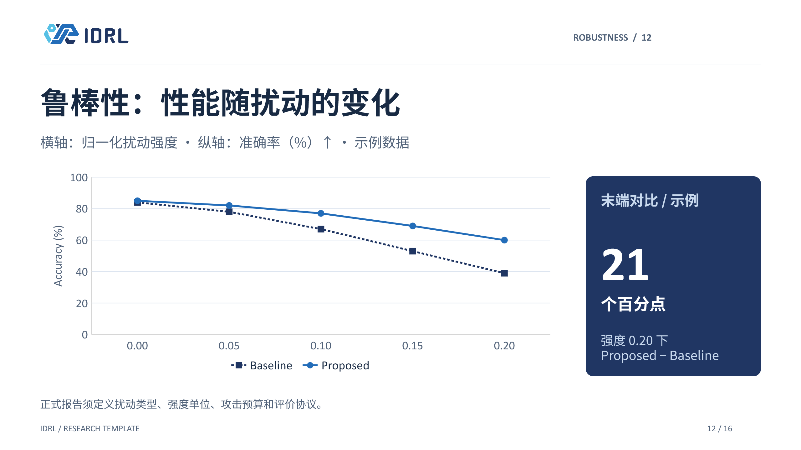
12 / 16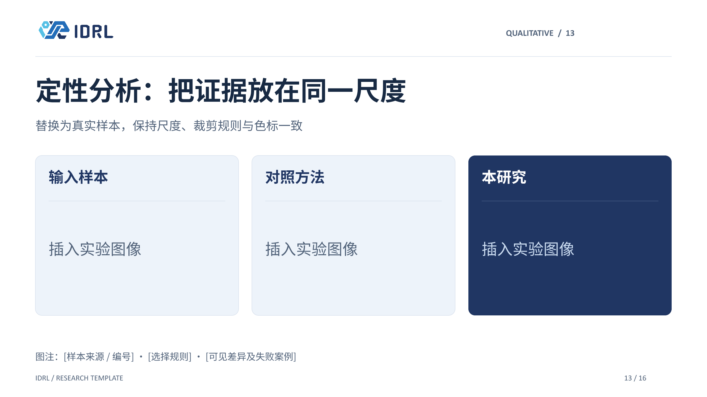
13 / 16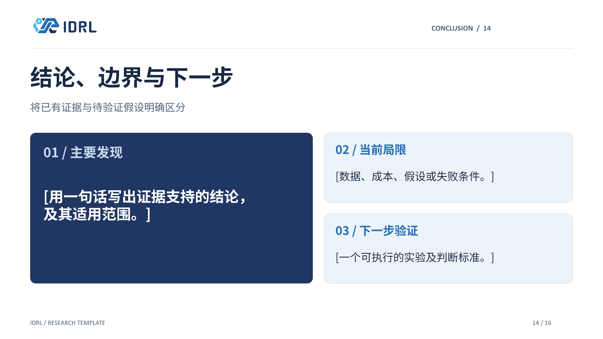
14 / 16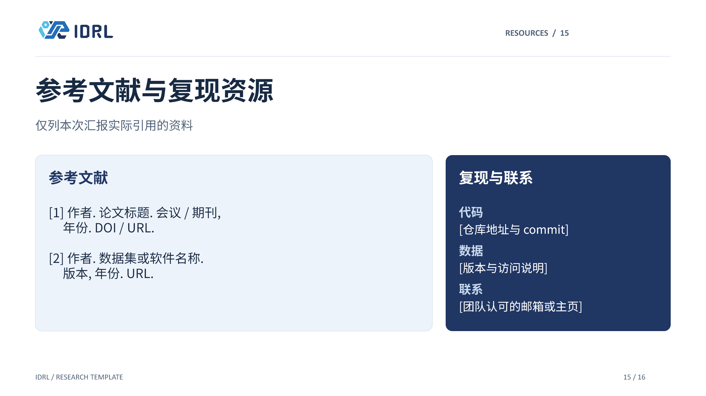
15 / 16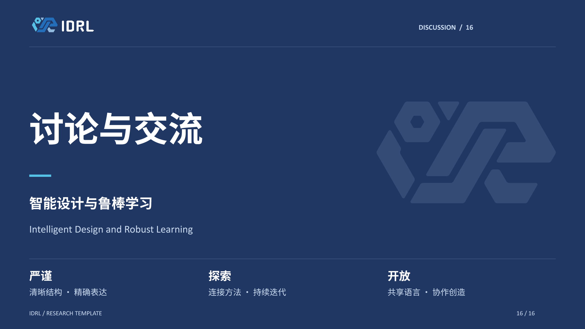
16 / 16